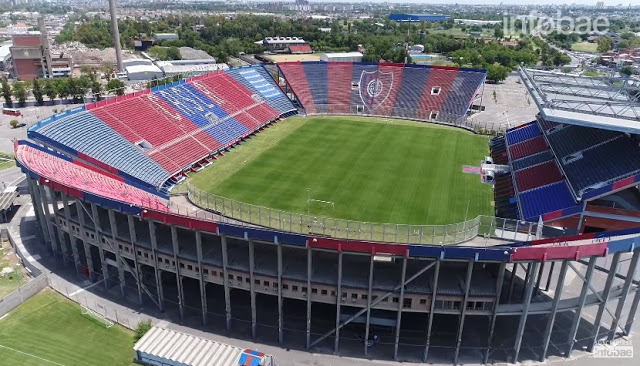

El estadio Pedro Bidegain, conocido popularmente como el Nuevo Gasómetro, es el actual estadio del Club Atlético San Lorenzo de Almagro. Ubicado en el barrio de Bajo Flores, en la ciudad de Buenos Aires, fue inaugurado el 16 de diciembre de 1993, después de que el club se viera forzado a abandonar su histórico estadio en Boedo en 1979. Con capacidad para aproximadamente 47,000 espectadores, el Nuevo Gasómetro se erige como uno de los estadios más emblemáticos de Argentina, especialmente entre los hinchas del "Ciclón", quienes lo consideran su segunda casa.
El nombre oficial del estadio, Pedro Bidegain, rinde homenaje a un expresidente de San Lorenzo, que dedicó su vida al desarrollo y crecimiento de la institución. Desde su inauguración, el estadio ha sido sede de memorables encuentros del fútbol argentino y ha visto desfilar a generaciones de jugadores y seguidores del club. La atmósfera que generan los hinchas en cada partido es un sello distintivo, convirtiendo el estadio en un lugar de vibrante energía y fervor por los colores azul y rojo.
Actualmente, San Lorenzo y sus hinchas están inmersos en un proyecto de vuelta a Boedo, que busca la reconstrucción de un estadio en el terreno original del Gasómetro en Avenida La Plata. Aunque el Pedro Bidegain sigue siendo el hogar del equipo, este proyecto simboliza un anhelo profundo de regresar al lugar que sienten como la cuna de su identidad. En tanto, el Nuevo Gasómetro sigue siendo un bastión donde se viven intensamente los triunfos y desafíos del club.
